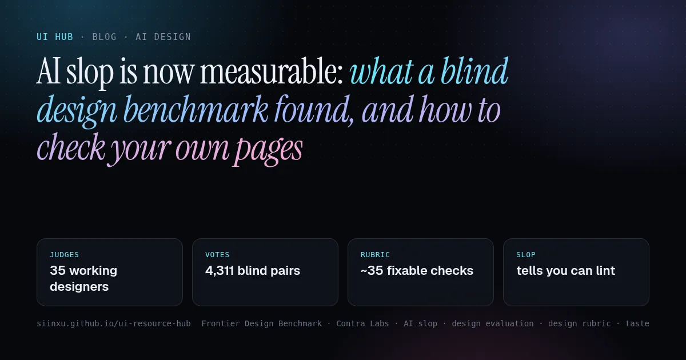
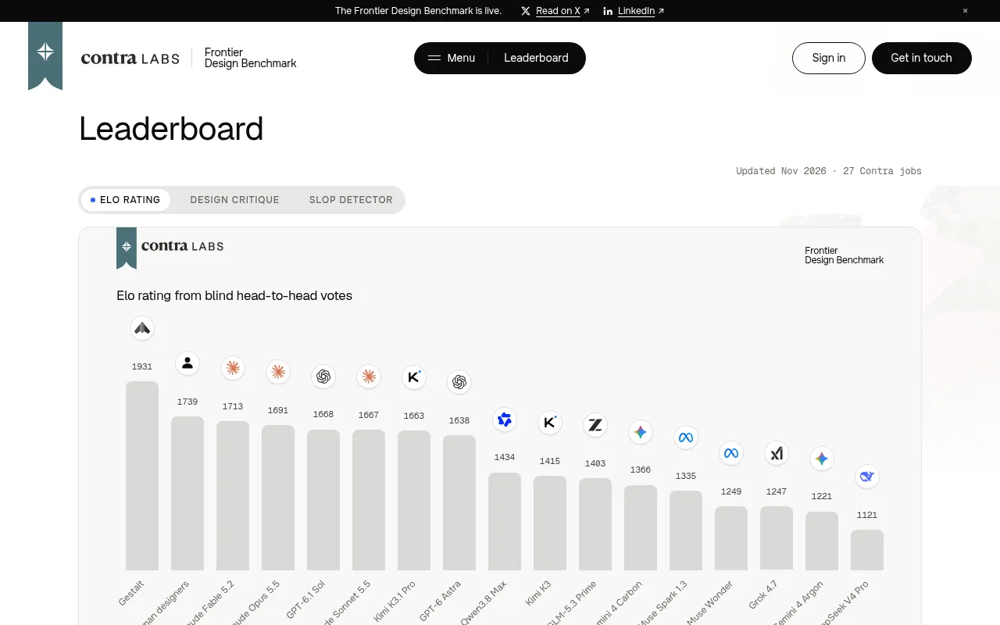
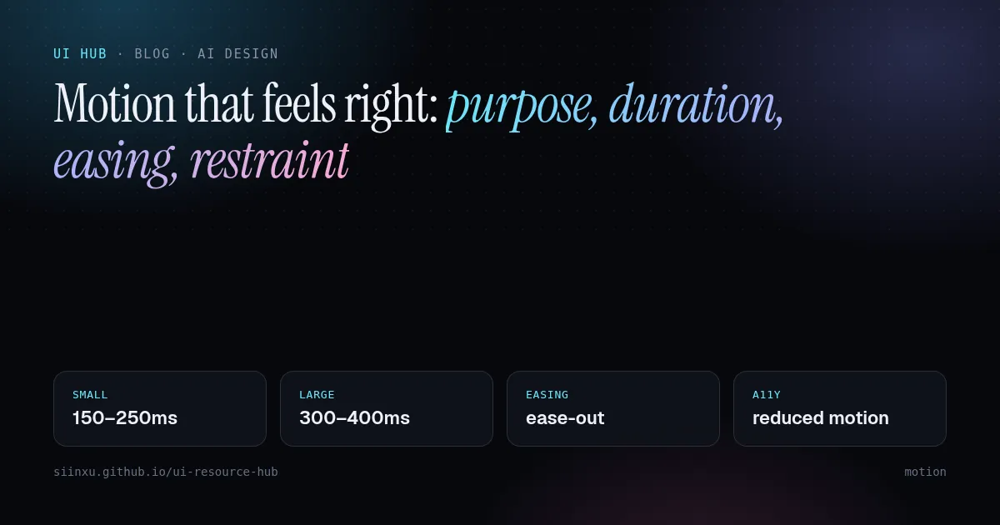
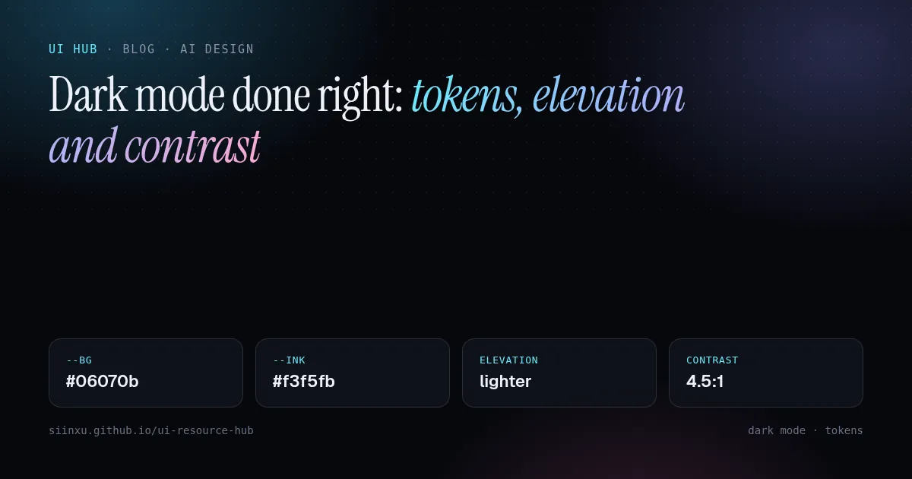
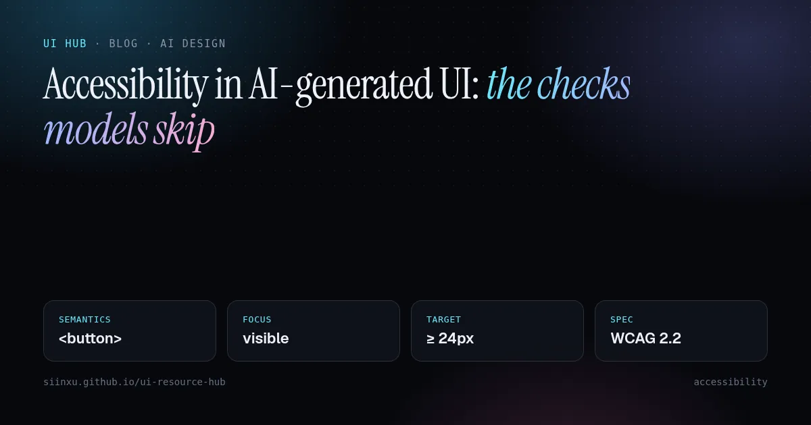

AI slop is now measurable: what a blind design benchmark found, and how to check your own pagesAIっぽさは測れるようになった：ブラインド評価のデザインベンチマークが示したことと、自分のページの点検法AI 티를 측정할 수 있게 됐다: 블라인드 디자인 벤치마크가 밝힌 것과 내 페이지 점검법Rupa “AI” kini boleh diukur: dapatan penanda aras reka bentuk buta, dan cara menyemak halaman anda sendiri“Mùi AI” giờ đã đo được: một benchmark thiết kế chấm mù phát hiện điều gì, và cách tự kiểm tra trang của bạnL’effet « fait par une IA » se mesure désormais : ce qu’a révélé un benchmark de design à l’aveugle, et comment vérifier vos pagesEl aspecto «hecho por IA» ya se puede medir: lo que encontró un benchmark de diseño a ciegas y cómo revisar tus páginasKI-Einheitslook ist jetzt messbar: was ein blinder Design-Benchmark gefunden hat und wie Sie Ihre eigenen Seiten prüfen
On 18 November 2026 Contra Labs and BenchFlow published the Frontier Design Benchmark: 33 real client briefs, sites built by 15 models, and 4,311 blind votes from 35 professional designers. A stealth model called Gestalt topped it, but the more useful output is a list of patterns that make a page look AI-made, counted across hundreds of pages. What the benchmark measured, why designers still preferred flawed human work, our take on using it, plus a slop-lint checklist, a small eval you can run and an agent prompt.2026年11月18日、Contra LabsとBenchFlowがFrontier Design Benchmarkを公開した。実際のクライアント案件33件、15モデルが作ったサイト、35人のプロデザイナーによる4,311票のブラインド投票。首位はGestaltという匿名モデルだが、より役立つのは「AIっぽく見える」パターンの一覧と、数百ページでの出現率だ。何を測ったのか、なぜ欠点のある人間の作品が好まれたのか、使い方への見解、チェックリスト、自分で回せる小さな評価、エージェント用プロンプト付き。2026년 11월 18일 Contra Labs와 BenchFlow가 Frontier Design Benchmark를 공개했다. 실제 클라이언트 브리프 33건, 15개 모델이 만든 사이트, 전문 디자이너 35명의 블라인드 투표 4,311표. 1위는 Gestalt라는 스텔스 모델이지만, 더 쓸모 있는 결과는 페이지를 AI가 만든 것처럼 보이게 하는 패턴 목록과 수백 페이지에서 센 빈도다. 무엇을 측정했는지, 왜 디자이너들이 결함 있는 사람 작업을 더 골랐는지, 활용법에 대한 견해, 체크리스트, 직접 돌릴 수 있는 작은 평가와 에이전트 프롬프트 포함.Pada 18 November 2026 Contra Labs dan BenchFlow menerbitkan Frontier Design Benchmark: 33 taklimat pelanggan sebenar, laman yang dibina oleh 15 model, dan 4,311 undian buta daripada 35 pereka profesional. Model rahsia bernama Gestalt di tempat pertama, tetapi hasil yang lebih berguna ialah senarai corak yang membuat halaman nampak dibuat AI, dikira merentas ratusan halaman. Apa yang diukur, mengapa pereka masih memilih kerja manusia yang ada cacat, pandangan kami, senarai semak, penilaian kecil dan prompt ejen.Ngày 18/11/2026, Contra Labs và BenchFlow công bố Frontier Design Benchmark: 33 brief khách hàng thật, website do 15 mô hình dựng, và 4.311 phiếu chấm mù từ 35 nhà thiết kế chuyên nghiệp. Mô hình ẩn danh Gestalt đứng đầu, nhưng kết quả hữu ích hơn là danh sách các mẫu khiến trang trông “do AI làm”, được đếm trên hàng trăm trang. Benchmark đo gì, vì sao nhà thiết kế vẫn chọn bản của người dù còn lỗi, nhận định của chúng tôi, kèm checklist, một bài đánh giá nhỏ tự chạy được và prompt cho agent.Le 18 novembre 2026, Contra Labs et BenchFlow ont publié le Frontier Design Benchmark : 33 vrais briefs clients, des sites construits par 15 modèles et 4 311 votes à l’aveugle de 35 designers professionnels. Un modèle furtif, Gestalt, arrive en tête, mais le résultat le plus utile est une liste de motifs qui donnent un air « fait par une IA », comptés sur des centaines de pages. Ce qui est mesuré, pourquoi les designers préfèrent encore un travail humain imparfait, notre avis, checklist, mini-évaluation et prompt.El 18 de noviembre de 2026 Contra Labs y BenchFlow publicaron el Frontier Design Benchmark: 33 briefs reales de clientes, sitios creados por 15 modelos y 4.311 votos a ciegas de 35 diseñadores profesionales. Un modelo en sigilo, Gestalt, quedó primero, pero lo más útil es una lista de patrones que hacen que una página parezca hecha por IA, contados en cientos de páginas. Qué mide, por qué los diseñadores aún prefieren trabajo humano con fallos, nuestra opinión, checklist, una evaluación pequeña y un prompt.Am 18. November 2026 haben Contra Labs und BenchFlow den Frontier Design Benchmark veröffentlicht: 33 echte Kundenbriefings, Websites von 15 Modellen und 4.311 Blindstimmen von 35 professionellen Designern. Ein Stealth-Modell namens Gestalt liegt vorn, nützlicher ist aber eine Liste von Mustern, die eine Seite nach KI aussehen lassen, gezählt über Hunderte Seiten. Was gemessen wurde, warum Designer fehlerhafte menschliche Arbeit trotzdem vorziehen, unsere Sicht, Checkliste, Mini-Eval und Agent-Prompt.

本文は英語で表示しています。
본문은 영어로 표시됩니다.
Kandungan dipaparkan dalam bahasa Inggeris.
Nội dung hiển thị bằng tiếng Anh.
Le corps de l’article est en anglais.
El cuerpo del artículo está en inglés.
Der Beitragstext ist auf Englisch.
On 18 November Contra Labs, the research arm of the freelance marketplace Contra, published the Frontier Design Benchmark together with BenchFlow, a company that runs AI agents in sandboxes and records what they produce. The headline went around X and Hacker News within a day: a stealth model called Gestalt, with no named maker, ranked first at about 1,930 Elo, ahead of both the best named model and the human designers. A commenter from Contra clarified on Hacker News that it is a single model and not Contra’s own.

The leaderboard is the least durable part of the release. Gestalt cannot be used, and model names will change by spring. What lasts is the method and one of its by-products: a list of the visual habits that make a page look machine-made, each with a measured frequency. If you generate interfaces with AI, that list is a lint rule set you can run on your own work this week.
What the benchmark actually measured
- Real briefs, not “a landing page for a coffee shop”. 27 of the 33 tasks are rewritten jobs from Contra’s marketplace and 6 come from startups with their own brand files and old sites. Contra says the median website brief on its platform runs 138 words on a budget of about $1,050, and three in four stack two or more constraints such as a logo, an audience and a business goal. Outputs include multi-page marketing sites, web apps with working flows and two mobile apps.
- A human bar in the same race. Contra designers made a moodboard of three directions, got feedback, built the site with tools of their choice and iterated. These “golden” designs were voted on blind alongside the models.
- Three different instruments. Blind pairwise votes from 35 professional designers (4,311 votes over five rounds, turned into ratings with a Bradley–Terry model; two random halves of the panel agree at Spearman 0.95). A Design Critique Rubric of about 35 checks grouped into structure, visual craft, and content and use, such as type hierarchy, spacing, contrast and whether everything renders whole. And a Slop Detector, a classifier trained on human-made and AI-made pages that scores 0 to 100 for how AI-looking a page is and lists the traits behind the score.

Three findings worth more than the ranking
The rubric agrees with designers about models, and disagrees about people. Across the 15 models, rubric score tracks the vote ranking closely (r = 0.94). But the human golden designs scored 73.6 on the rubric, sixth of 16 and behind the top Claude and GPT models, because they had concrete faults: a button label too dark to read, a wordmark clipped by the section above. Designers still picked them in 74% of matchups (425 of 574). A checklist catches mistakes; it does not measure the thing people were voting on.
Slop is mostly about frequency, and it is countable. Contra published a small subset of its pattern list with numbers. A tiny letter-spaced label above a heading that repeats the heading appears on at least half the sections of 93% of AI pages in the detector’s training set, against 11% of human pages. One italic word in the headline: up to 51% of one model’s pages, no human golden design. Numbered sections (01, 02, 03): 17% of AI pages, no human page at all. Content boxed in cards almost everywhere: 86% to 97% of pages for three models.
Each lab leaves fingerprints. Claude models put a horizontal arrow on links and buttons on 81% to 96% of their pages; GPT models use a diagonal arrow on 87% to 94%. One GPT model writes two- or three-phrase slogan headings on 55% of pages, against 4% for other labs. Another model centres every section heading on 44% of pages, against 1% elsewhere. On the Slop Detector, human goldens read 0.9 and Gestalt read close to them; the three Claude models read 31 to 38, the two GPT models 41 to 53 and the two Gemini models 54 to 57. Among the models Contra ran itself, the lowest reading belonged to DeepSeek V4 Pro, which also ranked last, because its pages were often unfinished. Looking less like AI is not the same as being good.
Our take
Treat the three instruments as three questions, and never collapse them into one score. Votes answer “which direction do people want?”. The rubric answers “what is broken and fixable?”. The slop reading answers “will this look like everyone else’s generated page?”. The golden-design result shows why the order matters: pick the direction by taste first, then use the rubric as a fix list, then lint for slop. Running the rubric first would have ranked the designs people liked best below five models.
Lint for ratios, not bans. An eyebrow label on one section is a choice; on every section it is a default showing through. The same goes for cards, arrows and centred headings. The fix is rarely to delete the pattern. It is to decide it once in your design system, which arrow glyph, which heading alignment, when a group earns a box, so the model’s house style stops deciding for you.
Read the headline with care. The operator of the ranking also sells evaluation data to labs, Gestalt’s sites do not appear in the public gallery, and its edge over the human designers rests on 28 head-to-head votes. NN/g’s aesthetic-usability effect is a reminder that a blind “which is better” vote rewards appeal, and appeal can hide usability problems. Use the leaderboard to shortlist tools, then test them on your own briefs.
We ran the published list against this blog. Our diagrams numbered their steps, so the diagrams in this post do not. The small uppercase keys inside our diagram boxes stay: each names a different value rather than repeating a heading, which is the case the list warns about.
How to run a small design eval of your own
- Write three real briefs. Take them from past projects, each with at least two constraints: a logo or palette, an audience, a mobile requirement, a business goal. Same assets for every contestant.
- Generate with each candidate, plus one human reference. Same time box and the same number of revision turns. If you can, run each model in the tool you would actually use.
- Vote blind in pairs. Three to five people who ship design. Strip tool names, shuffle sides for each pair, ask one question (“which would you hand to this client?”) and one optional sentence of why.
- Diagnose after voting. Score each output on a short rubric (hierarchy, spacing, contrast, broken or clipped elements, prompt adherence) and run the slop lint below. The deliverable is a fix list per tool, not just a winner.
- Feed fixes back as rules. Every recurring fault becomes a line in your design guidelines or agent skill, so the next generation starts above it.

Slop-lint checklist
- Small uppercase, letter-spaced labels above more than half of the section headings?
- An italic or highlighted word inside the main headline?
- Sections numbered 01, 02, 03 when the order carries no meaning?
- Most content groups inside bordered or filled cards?
- The same arrow glyph (→ or ↗) on nearly every link and button?
- Headings written as parallel slogans, with body copy that never says how the product works?
- Every section heading centred, or cards and phones tilted at an angle by default?
- Rubric basics: one clear type hierarchy, consistent spacing, readable contrast on every button, nothing clipped at 390 px and 1280 px, light and dark?
# Paste this into your design or coding agent
Audit the pages in <folder or URL list> for AI-default patterns.
- For each page, count sections and report the share that have:
a small uppercase letter-spaced label right above the heading,
a bordered or filled card around most content, a centred heading,
a rotated element, and an arrow glyph (→ ↗) in links or buttons.
- Flag an italic or highlighted word inside the h1, numbered section
labels (01, 02 …), and slogan-style headings.
- Flag any ratio above 50% and propose one design-system rule per flag
(e.g. "arrows only on external links"). Do not change code yet.
- Then check rubric basics at 390 px and 1280 px, light and dark:
contrast on buttons, clipped text or logos, type hierarchy, spacing.
Return a table and a short fix list. Wait for my approval.Related on UI Hub: teaching agents taste with design skills, linting agents onto your design system, and making AI design variants comparable.
On 18 November Contra Labs, the research arm of the freelance marketplace Contra, published the Frontier Design Benchmark together with BenchFlow, a company that runs AI agents in sandboxes and records what they produce. The headline went around X and Hacker News within a day: a stealth model called Gestalt, with no named maker, ranked first at about 1,930 Elo, ahead of both the best named model and the human designers. A commenter from Contra clarified on Hacker News that it is a single model and not Contra’s own.
The leaderboard is the least durable part of the release. Gestalt cannot be used, and model names will change by spring. What lasts is the method and one of its by-products: a list of the visual habits that make a page look machine-made, each with a measured frequency. If you generate interfaces with AI, that list is a lint rule set you can run on your own work this week.
What the benchmark actually measured
- Real briefs, not “a landing page for a coffee shop”. 27 of the 33 tasks are rewritten jobs from Contra’s marketplace and 6 come from startups with their own brand files and old sites. Contra says the median website brief on its platform runs 138 words on a budget of about $1,050, and three in four stack two or more constraints such as a logo, an audience and a business goal. Outputs include multi-page marketing sites, web apps with working flows and two mobile apps.
- A human bar in the same race. Contra designers made a moodboard of three directions, got feedback, built the site with tools of their choice and iterated. These “golden” designs were voted on blind alongside the models.
- Three different instruments. Blind pairwise votes from 35 professional designers (4,311 votes over five rounds, turned into ratings with a Bradley–Terry model; two random halves of the panel agree at Spearman 0.95). A Design Critique Rubric of about 35 checks grouped into structure, visual craft, and content and use, such as type hierarchy, spacing, contrast and whether everything renders whole. And a Slop Detector, a classifier trained on human-made and AI-made pages that scores 0 to 100 for how AI-looking a page is and lists the traits behind the score.
Three findings worth more than the ranking
The rubric agrees with designers about models, and disagrees about people. Across the 15 models, rubric score tracks the vote ranking closely (r = 0.94). But the human golden designs scored 73.6 on the rubric, sixth of 16 and behind the top Claude and GPT models, because they had concrete faults: a button label too dark to read, a wordmark clipped by the section above. Designers still picked them in 74% of matchups (425 of 574). A checklist catches mistakes; it does not measure the thing people were voting on.
Slop is mostly about frequency, and it is countable. Contra published a small subset of its pattern list with numbers. A tiny letter-spaced label above a heading that repeats the heading appears on at least half the sections of 93% of AI pages in the detector’s training set, against 11% of human pages. One italic word in the headline: up to 51% of one model’s pages, no human golden design. Numbered sections (01, 02, 03): 17% of AI pages, no human page at all. Content boxed in cards almost everywhere: 86% to 97% of pages for three models.
Each lab leaves fingerprints. Claude models put a horizontal arrow on links and buttons on 81% to 96% of their pages; GPT models use a diagonal arrow on 87% to 94%. One GPT model writes two- or three-phrase slogan headings on 55% of pages, against 4% for other labs. Another model centres every section heading on 44% of pages, against 1% elsewhere. On the Slop Detector, human goldens read 0.9 and Gestalt read close to them; the three Claude models read 31 to 38, the two GPT models 41 to 53 and the two Gemini models 54 to 57. Among the models Contra ran itself, the lowest reading belonged to DeepSeek V4 Pro, which also ranked last, because its pages were often unfinished. Looking less like AI is not the same as being good.
Our take
Treat the three instruments as three questions, and never collapse them into one score. Votes answer “which direction do people want?”. The rubric answers “what is broken and fixable?”. The slop reading answers “will this look like everyone else’s generated page?”. The golden-design result shows why the order matters: pick the direction by taste first, then use the rubric as a fix list, then lint for slop. Running the rubric first would have ranked the designs people liked best below five models.
Lint for ratios, not bans. An eyebrow label on one section is a choice; on every section it is a default showing through. The same goes for cards, arrows and centred headings. The fix is rarely to delete the pattern. It is to decide it once in your design system, which arrow glyph, which heading alignment, when a group earns a box, so the model’s house style stops deciding for you.
Read the headline with care. The operator of the ranking also sells evaluation data to labs, Gestalt’s sites do not appear in the public gallery, and its edge over the human designers rests on 28 head-to-head votes. NN/g’s aesthetic-usability effect is a reminder that a blind “which is better” vote rewards appeal, and appeal can hide usability problems. Use the leaderboard to shortlist tools, then test them on your own briefs.
We ran the published list against this blog. Our diagrams numbered their steps, so the diagrams in this post do not. The small uppercase keys inside our diagram boxes stay: each names a different value rather than repeating a heading, which is the case the list warns about.
How to run a small design eval of your own
- Write three real briefs. Take them from past projects, each with at least two constraints: a logo or palette, an audience, a mobile requirement, a business goal. Same assets for every contestant.
- Generate with each candidate, plus one human reference. Same time box and the same number of revision turns. If you can, run each model in the tool you would actually use.
- Vote blind in pairs. Three to five people who ship design. Strip tool names, shuffle sides for each pair, ask one question (“which would you hand to this client?”) and one optional sentence of why.
- Diagnose after voting. Score each output on a short rubric (hierarchy, spacing, contrast, broken or clipped elements, prompt adherence) and run the slop lint below. The deliverable is a fix list per tool, not just a winner.
- Feed fixes back as rules. Every recurring fault becomes a line in your design guidelines or agent skill, so the next generation starts above it.
Slop-lint checklist
- Small uppercase, letter-spaced labels above more than half of the section headings?
- An italic or highlighted word inside the main headline?
- Sections numbered 01, 02, 03 when the order carries no meaning?
- Most content groups inside bordered or filled cards?
- The same arrow glyph (→ or ↗) on nearly every link and button?
- Headings written as parallel slogans, with body copy that never says how the product works?
- Every section heading centred, or cards and phones tilted at an angle by default?
- Rubric basics: one clear type hierarchy, consistent spacing, readable contrast on every button, nothing clipped at 390 px and 1280 px, light and dark?
# Paste this into your design or coding agent
Audit the pages in <folder or URL list> for AI-default patterns.
- For each page, count sections and report the share that have:
a small uppercase letter-spaced label right above the heading,
a bordered or filled card around most content, a centred heading,
a rotated element, and an arrow glyph (→ ↗) in links or buttons.
- Flag an italic or highlighted word inside the h1, numbered section
labels (01, 02 …), and slogan-style headings.
- Flag any ratio above 50% and propose one design-system rule per flag
(e.g. "arrows only on external links"). Do not change code yet.
- Then check rubric basics at 390 px and 1280 px, light and dark:
contrast on buttons, clipped text or logos, type hierarchy, spacing.
Return a table and a short fix list. Wait for my approval.Related on UI Hub: teaching agents taste with design skills, linting agents onto your design system, and making AI design variants comparable.
AI promptAIプロンプトAI 프롬프트Prompt AIPrompt cho AIPrompt IAPrompt de IAKI-Prompt
Paste this into Claude, Cursor, v0 or another assistant to apply this post to your own project. Replace the parts in angle brackets.Claude・Cursor・v0 などのAIアシスタントに貼り付けると、この記事の方法をあなたのプロジェクトに適用できます。山括弧の部分は自分の内容に置き換えてください。Claude, Cursor, v0 같은 AI 도우미에 붙여 넣으면 이 글의 방법을 내 프로젝트에 적용할 수 있습니다. 꺾쇠괄호 안은 내 내용으로 바꾸세요.Tampal ke Claude, Cursor, v0 atau pembantu lain untuk menggunakan kaedah artikel ini pada projek anda. Gantikan bahagian dalam kurungan sudut.Dán vào Claude, Cursor, v0 hoặc trợ lý khác để áp dụng bài này cho dự án của bạn. Thay phần trong dấu ngoặc nhọn bằng nội dung của bạn.Collez-le dans Claude, Cursor, v0 ou un autre assistant pour appliquer cet article à votre projet. Remplacez les parties entre chevrons.Pégalo en Claude, Cursor, v0 u otro asistente para aplicar este artículo a tu proyecto. Sustituye lo que está entre corchetes angulares.In Claude, Cursor, v0 oder einen anderen Assistenten einfügen, um diesen Beitrag auf dein Projekt anzuwenden. Teile in spitzen Klammern ersetzen.
You are a senior UI engineer. Apply the article “AI slop is now measurable: what a blind design benchmark found, and how to check your own pages” (https://ui.incidental.site/blog/ai-slop-patterns-frontier-design-benchmark/) to my project.
Key idea: On 18 November 2026 Contra Labs and BenchFlow published the Frontier Design Benchmark: 33 real client briefs, sites built by 15 models, and 4,311 blind votes from 35 professional designers. A stealth model called Gestalt topped it, but the more useful output is a list of patterns that make a page look AI-made, counted across hundreds of pages. What the benchmark measured, why designers still preferred flawed human work, our take on using it, plus a slop-lint checklist, a small eval you can run and an agent prompt.
Steps:
1. Read the article and turn its advice into a numbered checklist of concrete, checkable rules.
2. Audit <my page / component / repo> against that checklist; mark each rule PASS or FAIL with file and line.
3. Fix the FAIL items in small batches, using my existing tokens and components. Do not invent APIs; follow the official docs the article links to.
4. Finish with a short list of open questions and anything you could not verify.あなたはシニアUIエンジニアです。記事「AIっぽさは測れるようになった：ブラインド評価のデザインベンチマークが示したことと、自分のページの点検法」（https://ui.incidental.site/blog/ai-slop-patterns-frontier-design-benchmark/）の方法を私のプロジェクトに適用してください。
要点：2026年11月18日、Contra LabsとBenchFlowがFrontier Design Benchmarkを公開した。実際のクライアント案件33件、15モデルが作ったサイト、35人のプロデザイナーによる4,311票のブラインド投票。首位はGestaltという匿名モデルだが、より役立つのは「AIっぽく見える」パターンの一覧と、数百ページでの出現率だ。何を測ったのか、なぜ欠点のある人間の作品が好まれたのか、使い方への見解、チェックリスト、自分で回せる小さな評価、エージェント用プロンプト付き。
手順：
1. 記事を読み、助言を具体的で確認可能な番号付きチェックリストにする。
2. そのチェックリストで <私のページ / コンポーネント / リポジトリ> を監査し、各項目を合格／不合格で示し、ファイルと行番号を書く。
3. 不合格の項目を、既存のトークンとコンポーネントを使って少しずつ修正する。APIを捏造せず、記事がリンクする公式ドキュメントに従う。
4. 最後に未解決の質問と検証できなかった点を挙げる。당신은 시니어 UI 엔지니어입니다. 글 “AI 티를 측정할 수 있게 됐다: 블라인드 디자인 벤치마크가 밝힌 것과 내 페이지 점검법”(https://ui.incidental.site/blog/ai-slop-patterns-frontier-design-benchmark/)의 방법을 내 프로젝트에 적용해 주세요.
핵심: 2026년 11월 18일 Contra Labs와 BenchFlow가 Frontier Design Benchmark를 공개했다. 실제 클라이언트 브리프 33건, 15개 모델이 만든 사이트, 전문 디자이너 35명의 블라인드 투표 4,311표. 1위는 Gestalt라는 스텔스 모델이지만, 더 쓸모 있는 결과는 페이지를 AI가 만든 것처럼 보이게 하는 패턴 목록과 수백 페이지에서 센 빈도다. 무엇을 측정했는지, 왜 디자이너들이 결함 있는 사람 작업을 더 골랐는지, 활용법에 대한 견해, 체크리스트, 직접 돌릴 수 있는 작은 평가와 에이전트 프롬프트 포함.
단계:
1. 글을 읽고 조언을 구체적이고 확인 가능한 번호 목록으로 정리한다.
2. 그 목록으로 <내 페이지 / 컴포넌트 / 저장소>를 점검하고, 항목마다 통과/실패와 파일·줄 번호를 적는다.
3. 실패 항목을 기존 토큰과 컴포넌트로 조금씩 고친다. API를 지어내지 말고 글에 링크된 공식 문서를 따른다.
4. 마지막으로 남은 질문과 확인하지 못한 내용을 정리한다.Anda jurutera UI kanan. Gunakan kaedah artikel “Rupa “AI” kini boleh diukur: dapatan penanda aras reka bentuk buta, dan cara menyemak halaman anda sendiri” (https://ui.incidental.site/blog/ai-slop-patterns-frontier-design-benchmark/) pada projek saya.
Idea utama: Pada 18 November 2026 Contra Labs dan BenchFlow menerbitkan Frontier Design Benchmark: 33 taklimat pelanggan sebenar, laman yang dibina oleh 15 model, dan 4,311 undian buta daripada 35 pereka profesional. Model rahsia bernama Gestalt di tempat pertama, tetapi hasil yang lebih berguna ialah senarai corak yang membuat halaman nampak dibuat AI, dikira merentas ratusan halaman. Apa yang diukur, mengapa pereka masih memilih kerja manusia yang ada cacat, pandangan kami, senarai semak, penilaian kecil dan prompt ejen.
Langkah:
1. Baca artikel dan jadikan nasihatnya senarai semak bernombor yang konkrit dan boleh disemak.
2. Audit <halaman / komponen / repo saya> dengan senarai itu; tandakan setiap peraturan LULUS atau GAGAL dengan fail dan baris.
3. Baiki item GAGAL sedikit demi sedikit menggunakan token dan komponen sedia ada. Jangan reka API; ikut dokumen rasmi yang dipautkan artikel.
4. Akhiri dengan soalan terbuka dan perkara yang tidak dapat disahkan.Bạn là kỹ sư UI cấp cao. Hãy áp dụng bài viết ““Mùi AI” giờ đã đo được: một benchmark thiết kế chấm mù phát hiện điều gì, và cách tự kiểm tra trang của bạn” (https://ui.incidental.site/blog/ai-slop-patterns-frontier-design-benchmark/) cho dự án của tôi.
Ý chính: Ngày 18/11/2026, Contra Labs và BenchFlow công bố Frontier Design Benchmark: 33 brief khách hàng thật, website do 15 mô hình dựng, và 4.311 phiếu chấm mù từ 35 nhà thiết kế chuyên nghiệp. Mô hình ẩn danh Gestalt đứng đầu, nhưng kết quả hữu ích hơn là danh sách các mẫu khiến trang trông “do AI làm”, được đếm trên hàng trăm trang. Benchmark đo gì, vì sao nhà thiết kế vẫn chọn bản của người dù còn lỗi, nhận định của chúng tôi, kèm checklist, một bài đánh giá nhỏ tự chạy được và prompt cho agent.
Các bước:
1. Đọc bài và biến lời khuyên thành danh sách kiểm tra đánh số, cụ thể, kiểm chứng được.
2. Rà soát <trang / component / repo của tôi> theo danh sách đó; ghi ĐẠT hoặc KHÔNG ĐẠT kèm tệp và dòng.
3. Sửa các mục KHÔNG ĐẠT theo từng đợt nhỏ, dùng token và component sẵn có. Không bịa API; làm theo tài liệu chính thức mà bài viết dẫn tới.
4. Kết thúc bằng các câu hỏi còn mở và những điểm chưa xác minh được.Tu es ingénieur UI senior. Applique l’article « L’effet « fait par une IA » se mesure désormais : ce qu’a révélé un benchmark de design à l’aveugle, et comment vérifier vos pages » (https://ui.incidental.site/blog/ai-slop-patterns-frontier-design-benchmark/) à mon projet.
Idée clé : Le 18 novembre 2026, Contra Labs et BenchFlow ont publié le Frontier Design Benchmark : 33 vrais briefs clients, des sites construits par 15 modèles et 4 311 votes à l’aveugle de 35 designers professionnels. Un modèle furtif, Gestalt, arrive en tête, mais le résultat le plus utile est une liste de motifs qui donnent un air « fait par une IA », comptés sur des centaines de pages. Ce qui est mesuré, pourquoi les designers préfèrent encore un travail humain imparfait, notre avis, checklist, mini-évaluation et prompt.
Étapes :
1. Lis l’article et transforme ses conseils en une liste numérotée de règles concrètes et vérifiables.
2. Audite <ma page / mon composant / mon dépôt> avec cette liste ; indique OK ou KO pour chaque règle, avec fichier et ligne.
3. Corrige les points KO par petits lots, avec mes tokens et composants existants. N’invente pas d’API ; suis la documentation officielle citée par l’article.
4. Termine par les questions ouvertes et ce que tu n’as pas pu vérifier.Eres un ingeniero de UI sénior. Aplica el artículo “El aspecto «hecho por IA» ya se puede medir: lo que encontró un benchmark de diseño a ciegas y cómo revisar tus páginas” (https://ui.incidental.site/blog/ai-slop-patterns-frontier-design-benchmark/) a mi proyecto.
Idea clave: El 18 de noviembre de 2026 Contra Labs y BenchFlow publicaron el Frontier Design Benchmark: 33 briefs reales de clientes, sitios creados por 15 modelos y 4.311 votos a ciegas de 35 diseñadores profesionales. Un modelo en sigilo, Gestalt, quedó primero, pero lo más útil es una lista de patrones que hacen que una página parezca hecha por IA, contados en cientos de páginas. Qué mide, por qué los diseñadores aún prefieren trabajo humano con fallos, nuestra opinión, checklist, una evaluación pequeña y un prompt.
Pasos:
1. Lee el artículo y convierte sus consejos en una lista numerada de reglas concretas y comprobables.
2. Audita <mi página / componente / repositorio> con esa lista; marca cada regla como CUMPLE o NO CUMPLE con archivo y línea.
3. Corrige los puntos que no cumplen en lotes pequeños, usando mis tokens y componentes actuales. No inventes APIs; sigue la documentación oficial que enlaza el artículo.
4. Termina con las preguntas abiertas y lo que no pudiste verificar.Du bist Senior-UI-Engineer. Wende den Artikel „KI-Einheitslook ist jetzt messbar: was ein blinder Design-Benchmark gefunden hat und wie Sie Ihre eigenen Seiten prüfen“ (https://ui.incidental.site/blog/ai-slop-patterns-frontier-design-benchmark/) auf mein Projekt an.
Kernidee: Am 18. November 2026 haben Contra Labs und BenchFlow den Frontier Design Benchmark veröffentlicht: 33 echte Kundenbriefings, Websites von 15 Modellen und 4.311 Blindstimmen von 35 professionellen Designern. Ein Stealth-Modell namens Gestalt liegt vorn, nützlicher ist aber eine Liste von Mustern, die eine Seite nach KI aussehen lassen, gezählt über Hunderte Seiten. Was gemessen wurde, warum Designer fehlerhafte menschliche Arbeit trotzdem vorziehen, unsere Sicht, Checkliste, Mini-Eval und Agent-Prompt.
Schritte:
1. Lies den Artikel und mach aus den Empfehlungen eine nummerierte Liste konkreter, prüfbarer Regeln.
2. Prüfe <meine Seite / Komponente / mein Repo> anhand dieser Liste; markiere jede Regel mit OK oder FEHLT, mit Datei und Zeile.
3. Behebe die fehlenden Punkte in kleinen Schritten mit meinen vorhandenen Tokens und Komponenten. Erfinde keine APIs; folge der offiziellen Doku, die der Artikel verlinkt.
4. Schließe mit offenen Fragen und dem, was du nicht prüfen konntest.References参考文献참고 자료RujukanNguồn tham khảoRéférencesReferenciasQuellen
- Frontier Design: Evaluating AI on Real World Design Tasks — Contra Labs
- Frontier Design Benchmark leaderboard — Contra Labs × BenchFlow
- Methodology — Contra Labs × BenchFlow
- Design Critique Rubric and Slop Detector — Contra Labs × BenchFlow
- Gallery of model and human outputs — Contra Labs × BenchFlow
- Stealth model Gestalt beats Claude Fable 5.2 on the Frontier Design Benchmark — Pasquale Pillitteri
- Two stealth models just appeared on the leaderboard, both ahead of Fable 5.2 (discussion) — Hacker News
- BenchFlow — BenchFlow
- Bradley–Terry model — Wikipedia
- The Aesthetic-Usability Effect — Kate Moran · Nielsen Norman Group
- How to Conduct a Heuristic Evaluation — Nielsen Norman Group
Related posts関連記事관련 글Artikel berkaitanBài liên quanArticles liésArtículos relacionadosÄhnliche Beiträge

Motion that feels right: purpose, duration, easing, restraintしっくりくるモーション：目的・時間・イージング・抑制자연스러운 모션: 목적, 시간, 이징, 절제Gerakan yang terasa betul: tujuan, tempoh, easing, kawalanChuyển động đúng cảm giác: mục đích, thời lượng, easing, tiết chếUn mouvement juste : intention, durée, easing, retenueMovimiento que se siente bien: propósito, duración, easing, contenciónBewegung, die sich richtig anfühlt: Zweck, Dauer, Easing, Zurückhaltung
Most UI motion should be under 300ms, ease-out, and skipped for frequent actions. Spectacle belongs on marketing pages, not in tools.UIモーションは300ms以内・ease-out、頻繁な操作には付けない。UI 모션은 300ms 이하, ease-out, 잦은 동작엔 생략.Kebanyakan gerakan UI di bawah 300ms, ease-out, dan dilangkau untuk tindakan kerap.Hầu hết chuyển động dưới 300ms, ease-out, bỏ qua với thao tác thường xuyên.Moins de 300 ms, ease-out, et rien pour les actions fréquentes.Menos de 300 ms, ease-out, y nada en acciones frecuentes.Unter 300 ms, ease-out, und keine Animation für häufige Aktionen.

Dark mode done right: tokens, elevation and contrast正しいダークモード：トークン・階層・コントラスト다크 모드 제대로: 토큰, 고도, 대비Mod gelap yang betul: token, ketinggian dan kontrasLàm dark mode đúng: token, độ nổi và độ tương phảnUn mode sombre réussi : tokens, élévation et contrasteModo oscuro bien hecho: tokens, elevación y contrasteDark Mode richtig: Tokens, Elevation und Kontrast
Dark mode is a second palette, not an inverted one. Use semantic tokens, lighter surfaces for elevation, and desaturated accents.ダークモードは反転ではなく第二のパレット。意味トークン、明るい面で階層、彩度を下げたアクセント。다크 모드는 반전이 아니라 두 번째 팔레트. 시맨틱 토큰, 밝은 면으로 고도 표현.Mod gelap ialah palet kedua, bukan terbalik. Guna token semantik dan permukaan lebih cerah untuk ketinggian.Dark mode là bảng màu thứ hai, không phải đảo màu. Dùng token ngữ nghĩa, bề mặt sáng hơn để thể hiện độ nổi.Une seconde palette, pas une inversion. Tokens sémantiques, surfaces plus claires pour l'élévation.Una segunda paleta, no una inversión. Tokens semánticos y superficies más claras para la elevación.Eine zweite Palette, keine Invertierung. Semantische Tokens, hellere Flächen für Elevation.

Accessibility in AI-generated UI: the checks models skipAI生成UIのアクセシビリティ：モデルが飛ばすチェックAI 생성 UI의 접근성: 모델이 빠뜨리는 점검Kebolehcapaian dalam UI jana AI: semakan yang dilangkau modelKhả năng tiếp cận trong UI do AI tạo: những kiểm tra mô hình bỏ quaAccessibilité de l'UI générée par IA : les vérifications oubliéesAccesibilidad en UI generada por IA: las comprobaciones que se saltanBarrierefreiheit in KI-generierter UI: die übersprungenen Checks
Generated UIs look fine and fail keyboards and screen readers. Start from accessible primitives, then audit against WCAG 2.2.見た目は良くてもキーボードやスクリーンリーダーで失敗。アクセシブルな基盤からWCAG 2.2で監査。보기엔 괜찮아도 키보드·스크린리더에서 실패. 접근성 기반에서 시작해 WCAG 2.2로 점검.Nampak baik tetapi gagal untuk papan kekunci dan pembaca skrin. Mula dengan primitif boleh capai, audit dengan WCAG 2.2.Trông ổn nhưng hỏng với bàn phím và trình đọc màn hình. Dùng primitive dễ tiếp cận, kiểm theo WCAG 2.2.Belles mais inutilisables au clavier. Partir de primitives accessibles, auditer selon WCAG 2.2.Se ven bien pero fallan con teclado y lector. Parte de primitivas accesibles y audita con WCAG 2.2.Sieht gut aus, scheitert an Tastatur und Screenreader. Mit barrierefreien Primitives starten, nach WCAG 2.2 prüfen.